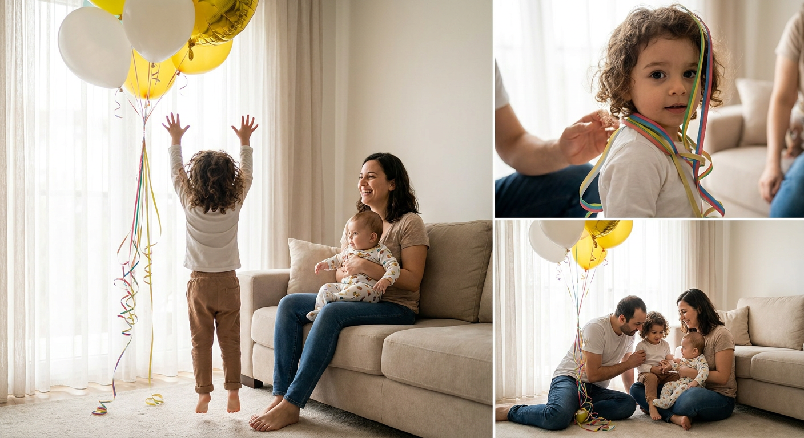
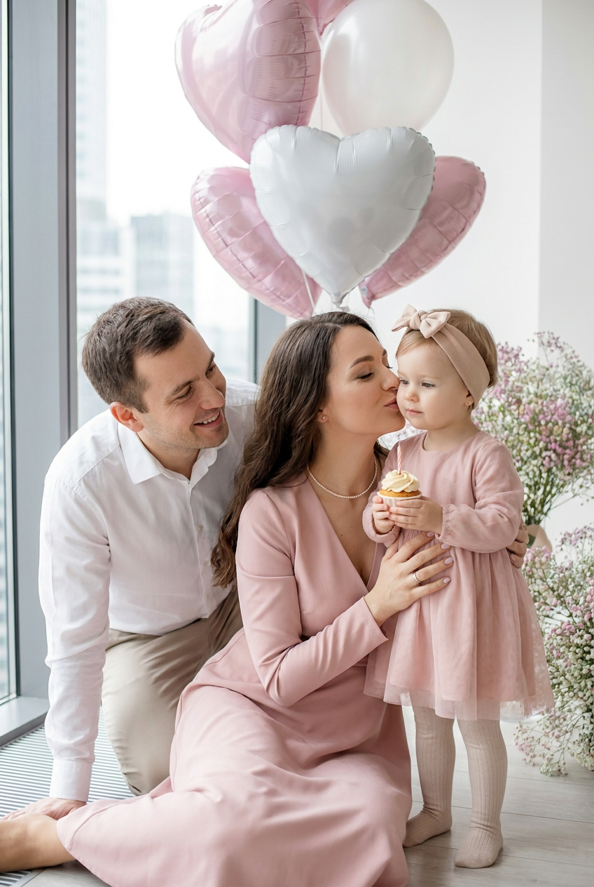
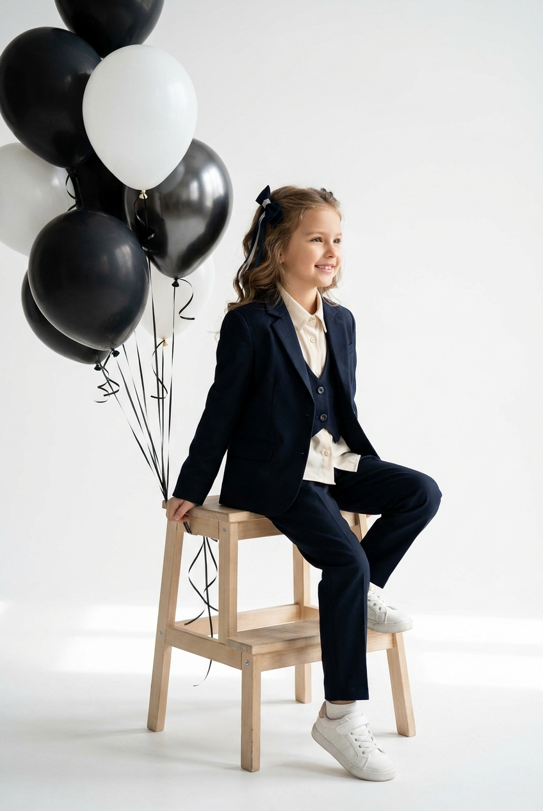
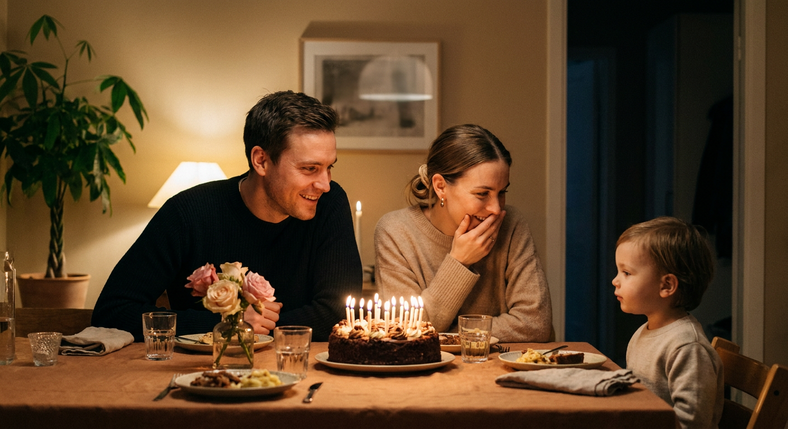
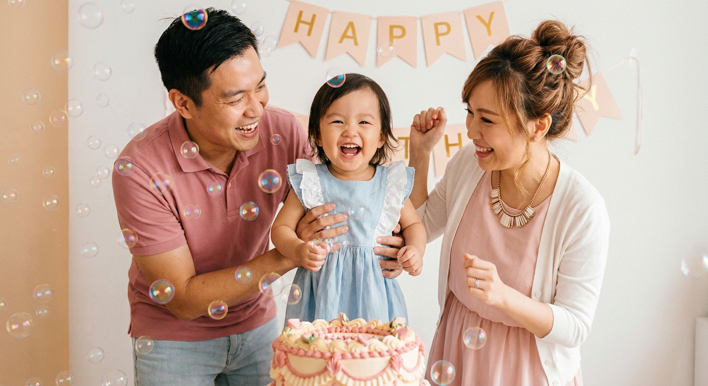
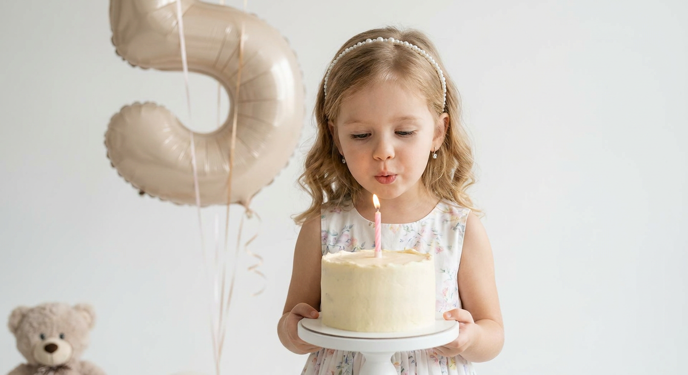
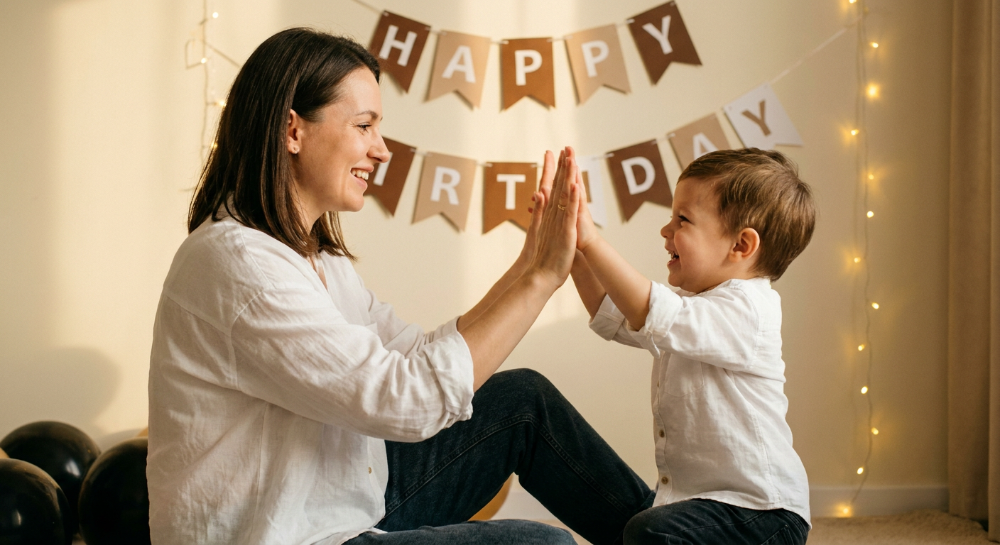
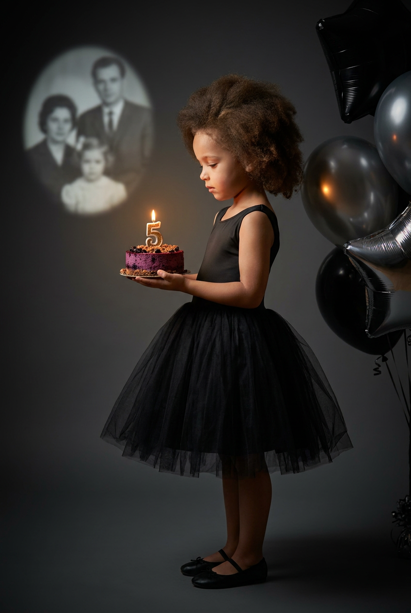
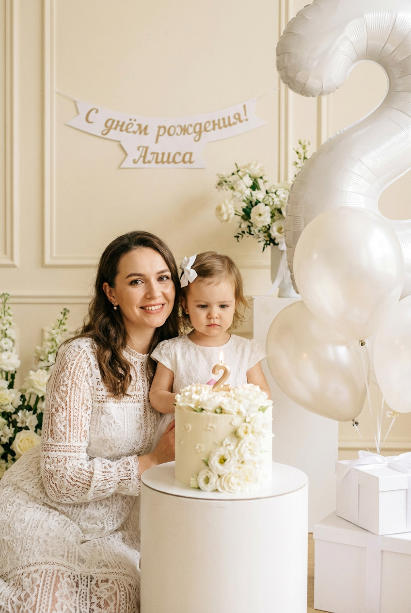
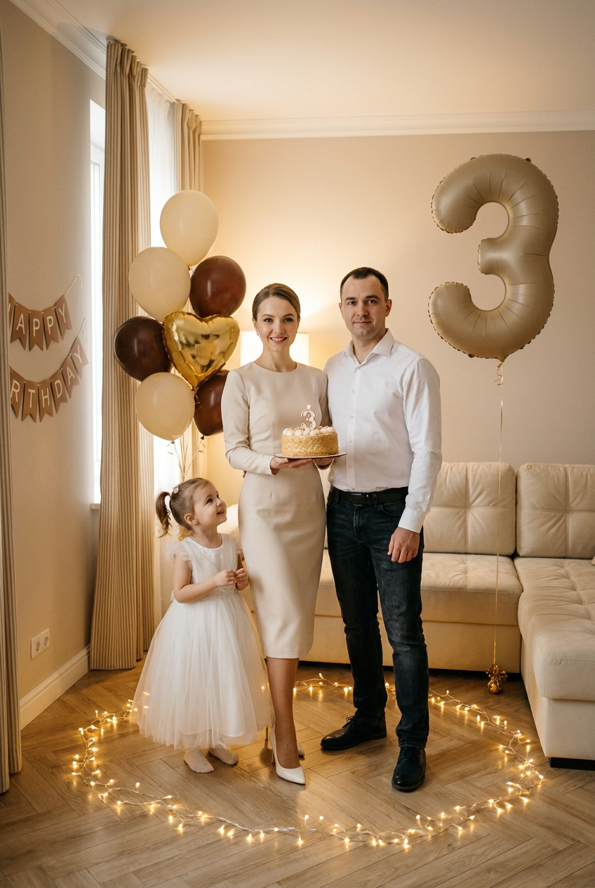

ИИ-фотосессия на день рождения: 10 промптов для нейросети

На день рождения хочется сохранить живые фотографии ребёнка, но домашняя съёмка часто превращается в хаос: неудачный свет, случайный фон, смазанные руки и непослушные детали. Генерация помогает собрать аккуратную фотосессию даже без студии и фотографа.
В подборке — 10 сценариев для разных настроений: от светлых студийных портретов и нежных кадров с мамой до семейного ужина, праздничной фотозоны, снимков с тортом и кинематографичных тёмных сцен.
Как сгенерировать такое фото: пошагово
Нужен снимок анфас при ровном свете, лицо в кадре целиком, без тёмных очков и головных уборов. Разрешение от 1000 пикселей по короткой стороне. Чем чётче исходник, тем точнее модель повторит черты.
Выберите сценарий ниже и нажмите «Копировать» — текст уйдёт в буфер целиком, вместе с командой сохранения внешности. Эта команда стоит первой строкой и отвечает за то, чтобы на выходе было ваше лицо, а не случайное.
Кнопка «Сгенерировать» рядом с каждым промптом открывает модель в новой вкладке. Nano Banana Pro работает с референсом лица — в отличие от моделей, которые генерируют портрет с нуля и узнаваемость теряют.
Промпт — в поле ввода, портрет — через загрузку референса. Порядок значения не имеет, но без референса команда сохранения внешности работать не будет: модели нечего сохранять.
Для сторис и ленты берите 9:16, для превью и обложек — 4:3. Первый результат редко идеален: если поза или свет ушли не туда, поправьте соответствующую часть промпта и запустите заново. Обычно хватает двух-трёх итераций.
10 промптов для генерации
1. Семейный триптих дома
Строго сохранить внешность по загруженному референсу: черты лица, пропорции, мимику и текстуру кожи без изменений. Создай фотореалистичный горизонтальный коллаж из трёх широких панелей на одном фоне: это серия candid-фотографий, снятых в один домашний день рождения. Используй загруженный референс для лиц и точно сохрани индивидуальные черты, форму глаз, бровей, носа, губ, овал лица, естественную мимику и пропорции. Общая стилистика — lifestyle photography, мягкий дневной high-key свет из большого окна слева, светлые полупрозрачные шторы, лёгкое рассеянное свечение, натуральные цвета и реалистичная кожа. В гостиной вокруг семьи размести белые и жёлтые воздушные шары, по 2–6 в разных зонах кадра, с мягкими бликами на фольге. В каждой горизонтальной полосе покажи отдельный момент праздника: общение семьи, ребёнка рядом с тортом и радостное поздравление. Умеренное боке, фон размывай только за главным объектом, лица и руки прорисуй детально.
2. Семья у окна

Строго сохранить внешность по загруженному референсу: черты лица, пропорции, мимику и текстуру кожи без изменений. Сделай вертикальный фотореалистичный семейный портрет в светлом современном интерьере. Семья сидит на полу у окна и занимает центральную часть кадра; камера расположена на уровне глаз, ракурс параллелен полу. Лица возьми с загруженного референса, без изменения внешности: сохрани форму глаз, бровей, носа, губ, овал лица, мимику и реальные пропорции. Свет мягкий, рассеянный, дневной, в стиле high-key, с минимальными тенями и лёгким размытием заднего плана. Цвета нежные, пастельные: пудрово-розовый, кремовый, перламутровый; кожа натуральная, макияж почти незаметный. В верхней части композиции видны крупные полупрозрачные фольгированные сердца белого, пудрово-розового и перламутрового оттенков. Слева оставь часть стильного окна или витража, за ним — неразличимый размытый городской фон, создающий ощущение воздуха.
3. Студийный портрет девочки

Строго сохранить внешность по загруженному референсу: черты лица, пропорции, мимику и текстуру кожи без изменений. Сгенерируй вертикальный фотореалистичный портрет девочки в минималистичной студии на белом бесшовном фоне. Свет ровный, high-key, с мягкой тенью под табуретом и ногами, без лишних предметов в окружении. Девочка сидит на стуле или деревянном табурете из светлой древесины: одна нога согнута и стоит на табурете либо на полу, вторая также согнута, корпус немного развёрнут к камере. Поворот вправо даёт лёгкий полупрофиль, на лице уверенная праздничная улыбка. Волосы уложены мягкими волнами, пробор может быть по центру или сбоку; добавь небольшой тёмный бантик или заколку, тёмные ленты либо резинки. Одежда — тёмный пиджак или костюмная куртка с аккуратными рукавами. Используй референс лица и сохрани его реальные черты, мимику и пропорции. Главный акцент — лицо, поза и естественная детская уверенность.
4. Праздничный ужин дома

Строго сохранить внешность по загруженному референсу: черты лица, пропорции, мимику и текстуру кожи без изменений. Покажи фотореалистичную сцену семейного вечернего ужина в гостиной в честь дня рождения. За столом собрались гости, в центре внимания ребёнок и праздничный торт. Освещение тёплое и мягкое: свечи, лампы или бра дают уютный низкий свет, а изображению добавь лёгкую плёночную зернистость. Стены светло-бежевые или светло-коричневые; слева у края кадра видны зелёные листья напольного либо настенного растения. В центре задней стены размести рамку с картиной без читаемых надписей, справа оставь дверной проём в более тёмную часть комнаты. Отец сидит слева, на нём тёмная футболка или свитер, он тепло улыбается, повернув лицо вправо и глядя на ребёнка или торт; рука лежит рядом в естественной позе. Мать находится по центру среди гостей, её взгляд также направлен к ребёнку. Сохрани лица по референсу, реальные черты, мимику и пропорции, без пластиковой кожи.
5. Поздравление у гирлянды

Строго сохранить внешность по загруженному референсу: черты лица, пропорции, мимику и текстуру кожи без изменений. Создай тёплую фотореалистичную семейную сцену поздравления с днём рождения дома или в светлой студии. Съёмка в духе lifestyle и candid portrait, мягкий рассеянный свет, лёгкая цветокоррекция в персиково-бежевой гамме. На белой стене позади героев развесь праздничную гирлянду из треугольных флажков: сверху крупно и разборчиво должно быть написано HAPPY, справа или по дуге — BIRTHDAY. Буквы на отдельных флажках контрастные и не искажены, декор аккуратный. Слева стоит папа в розово-пудровой футболке-поло с коротким рукавом и светло-голубых джинсах. Он наклоняется к ребёнку, широко и доброжелательно улыбается, смотрит на малыша, руками мягко поддерживает его за бока. Добавь рядом маму и ребёнка в естественной праздничной позе, без напряжения. Лица используй с референса, сохрани индивидуальные черты, мимику и пропорции, руки прорисуй без лишних пальцев.
6. Торт и шар-цифра

Строго сохранить внешность по загруженному референсу: черты лица, пропорции, мимику и текстуру кожи без изменений. Сделай вертикальный фотореалистичный студийный портрет девочки на очень светлом белом бесшовном фоне без текстур и предметов. Освещение мягкое, равномерное, high-key, без жёстких теней; атмосфера нежной премиальной детской съёмки. Камера находится на уровне глаз ребёнка, композиция фронтальная и центрированная. Главные акценты — лицо девочки, небольшой праздничный торт со свечой перед ней и крупный фольгированный шар в форме цифры позади. Фон гладкий, глубина резкости умеренная, края декора слегка мягкие. У девочки волосы до плеч или чуть короче, уложенные мягкими волнами. На голове тонкая повязка или диадема с маленькими белыми либо перламутровыми бусинами и декоративными камнями. Одежда праздничная, аккуратная, в нежной детской стилистике. Используй загруженный референс для лица: не меняй форму глаз, бровей, носа, губ, овал, мимику и пропорции.
7. Игра с мамой

Строго сохранить внешность по загруженному референсу: черты лица, пропорции, мимику и текстуру кожи без изменений. Сгенерируй фотореалистичный тёплый семейный кадр в кинематографичной lifestyle-эстетике, словно снимок сделан дома или в небольшой студии в golden hour. Свет мягкий, золотистый, ламповый, без резких теней; добавь деликатное плёночное зерно. Фон — светлая кремовая стена или простой интерьерный задник. Слева сидит мама или держит ребёнка на коленях. У неё пробор по центру, несколько прядей свободно лежат на плечах, на ней белая свободная рубашка либо блуза с длинными рукавами и тёмные джинсы. Мама улыбается и смотрит вправо на малыша; руки подняты навстречу ребёнку, ладони почти соприкасаются, будто они играют в «дай пять». Лицо показано в полупрофиль, выражение нежное и радостное. Справа напротив неё находится маленький ребёнок в праздничной одежде, смотрит на маму и тянется к её ладоням. Лица и внешность всех героев точно передай по загруженному референсу.
8. Тёмный портрет с тортом

Строго сохранить внешность по загруженному референсу: черты лица, пропорции, мимику и текстуру кожи без изменений. Создай вертикальный фотореалистичный студийный портрет в кинематографичном low-key стиле. Фон гладкий, тёмно-серый или почти чёрный, по краям мягкое затемнение vignette. На девочку и торт падает тёплый акцентный свет, а справа видна связка воздушных шаров с бликами на фольге. В центре стоит девочка в чёрном праздничном платье-пачке силуэта ballerina dress: пышная юбка состоит из множества слоёв тюля и сетки, верх гладкий матовый, допустимы тонкие бретели. На ногах чёрные туфельки или балетки с ремешком, носы слегка закрыты. Девочка развёрнута в профиль или мягкий полупрофиль, держит перед собой небольшой торт и смотрит на него вниз с сосредоточенной, спокойной эмоцией. Свет подчёркивает лицо, фактуру платья и края шаров, но не превращает кожу в глянец. Внешность, черты лица, мимику и пропорции сохрани по загруженному референсу.
9. Премиум фотозона для малыша

Строго сохранить внешность по загруженному референсу: черты лица, пропорции, мимику и текстуру кожи без изменений. Покажи вертикальную фотореалистичную семейную фотографию в стиле premium baby birthday. Интерьер светлый, свет мягкий, тёплый и рассеянный, с high-key настроением. Кремовые или бежевые стены укрась декоративной молдинг-рамкой. Вся фотозона выдержана в бело-перламутровой гамме: белые ткани, белые цветочные детали, воздушные шары с деликатными бликами. Камера на уровне глаз ребёнка. Слева у небольшого стола сидит мама, в центре рядом с тортом стоит или сидит маленькая девочка, справа расположены крупные фольгированные шары и коробки с подарками. На заднем плане добавь декоративный баннер с коротким праздничным текстом без артефактов. Мама выглядит аккуратно, улыбается и нежно смотрит на дочь; одежда светлая, праздничная, без броских принтов. Ребёнок одет нарядно и естественно взаимодействует с тортом. Используй загруженный референс для лиц, точно сохрани индивидуальные черты, мимику, пропорции и натуральную текстуру кожи.
10. Семья у дивана и огоньков

Строго сохранить внешность по загруженному референсу: черты лица, пропорции, мимику и текстуру кожи без изменений. Сделай фотореалистичную семейную фотосессию в уютной домашней комнате с тёплым ламповым светом и гирляндами-огоньками. Стены светло-бежевые, справа стоит мягкий кремовый или бежевый диван с классической пуговичной простёжкой, под ногами светлый дубовый паркет. Слева у стены находится высокое окно или ниша с бежевыми шторами в полоску. В центре кадра мама и папа слегка наклонены друг к другу и поддерживают ребёнка рядом с праздничным тортом. Мама с гладкой укладкой смотрит в камеру и доброжелательно улыбается; на ней светлый бежево-кремовый наряд — элегантное платье или домашний комплект, натуральный макияж, на ногах белые туфли на каблуке. Папа одет в белую рубашку с аккуратным воротником и тёмные брюки, его поза спокойная и заботливая. Руки родителей поддерживают малыша или направляют его к торту. Лица точно передай по референсу, без изменения внешности.
Что важно учесть в этом стиле
Для детской фотосессии лучше сразу задать возраст, рост, одежду, выражение лица и положение рук. Чем конкретнее описание позы, тем меньше случайных жестов и лишних пальцев в результате.
Свет определяет настроение сильнее декора. Для нежных кадров подойдут high-key и окно слева, для домашнего вечера — тёплые лампы и свечи, а для выразительного портрета — low-key с одним акцентным источником.
Идеи для вариаций
- Замените бело-жёлтые шары на палитру любимого мультфильма ребёнка.
- Добавьте цифру возраста из фольги, бумажную корону или конфетти.
- Попросите нейросеть показать один и тот же сюжет крупным планом и в полный рост.
- Сделайте сезонную версию: снежное окно, весенние цветы или летний балкон.
- Для семейного альбома закажите серию в одном стиле с одинаковым светом и одеждой.
Как собрать свой промпт
Начните с формата и типа съёмки: вертикальный портрет, горизонтальный кадр, триптих, студийная или домашняя сцена. Затем опишите локацию, источник света, цветовую палитру, реквизит, возраст ребёнка, одежду, позу и эмоцию.
В конце добавьте технические параметры: камера на уровне глаз, объектив 50 мм для портрета или 35 мм для семейной сцены, диафрагма f/2.8–f/4, естественная кожа, реалистичные руки, разрешение 2048×3072 пикселей. Если результат нестабильный, меняйте по одному блоку и делайте 4–8 попыток.
Ошибки, из-за которых кадр не получается
- Слишком много героев и предметов. Нейросеть путает, кто держит торт и кому принадлежат руки. Укажите роли и положение каждого человека.
- Нечёткий источник света. Смешение окна, свечей и студийных приборов часто даёт странные тени. Опишите главный свет и его направление.
- Надписи без ограничения. Текст на гирляндах и баннерах может превратиться в набор символов. Просите короткие слова крупными буквами и проверяйте результат.
- Слишком сильная стилизация лица. Слова «кукольный» и «идеальная кожа» приводят к потере сходства. Лучше указать натуральную текстуру и реальную мимику.
- Сложная поза для ребёнка. Не просите одновременно бежать, держать торт и смотреть в камеру. Разделите сцену на простые действия.
Частые вопросы
Как сделать такое ИИ-фото бесплатно?
Попробуйте Kandinsky и Шедеврум: они подходят для простых сцен и обычно доступны без оплаты, но точность работы с загруженным лицом и стабильность деталей ограничены. В Krea AI и Arena.ai можно тестировать генерацию и сравнивать модели, однако бесплатный доступ может зависеть от текущих лимитов. Ни один сервис не гарантирует идеальное сходство, правильный текст на гирлянде или нормальные руки с первой попытки. Для ребёнка используйте только фотографии, на публикацию которых у вас есть согласие.
Как сохранить сходство ребёнка с референсом?
Загрузите чёткий портрет без фильтров, где хорошо видны глаза, нос, губы и овал лица. Не меняйте одновременно возраст, причёску и ракурс. В промпте отдельно укажите, что нужно сохранить реальные черты, естественную мимику и пропорции. Если сервис поддерживает силу референса, начните со среднего значения и сделайте несколько вариантов.
Какой формат выбрать для семейного альбома?
Для печати портрета подойдут вертикальные изображения 2:3 или 4:5, например 2048×3072 пикселей. Для сторис удобнее соотношение 9:16, а для баннера или заставки — горизонтальный формат 16:9. Лучше заранее выбрать размер: при последующем сильном кадрировании часть торта, шаров или рук может исчезнуть.
Почему нейросеть искажает надписи и руки?
Генераторы часто ошибаются в мелком тексте, особенно если в кадре несколько флажков. Просите короткую надпись крупными буквами, оставляйте её на спокойном фоне и проверяйте несколько вариантов. Для рук задайте простую позу, не прячьте кисти за предметами и добавьте запрет на лишние пальцы, деформации и слияние рук.